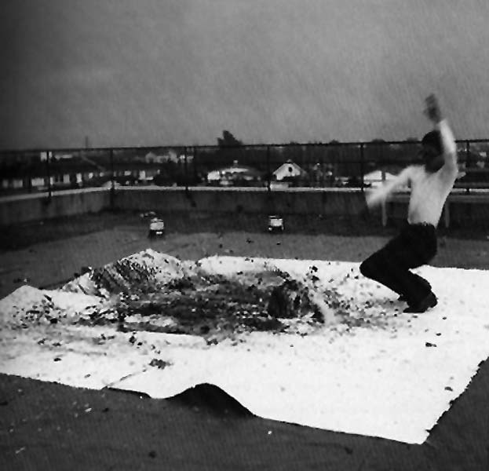
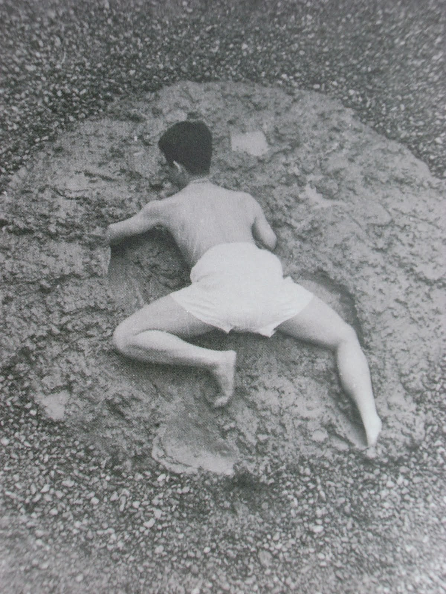
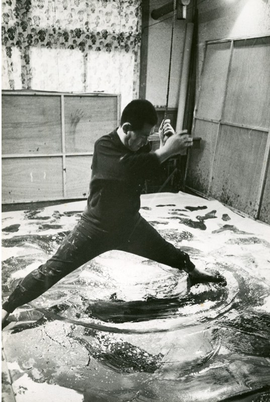
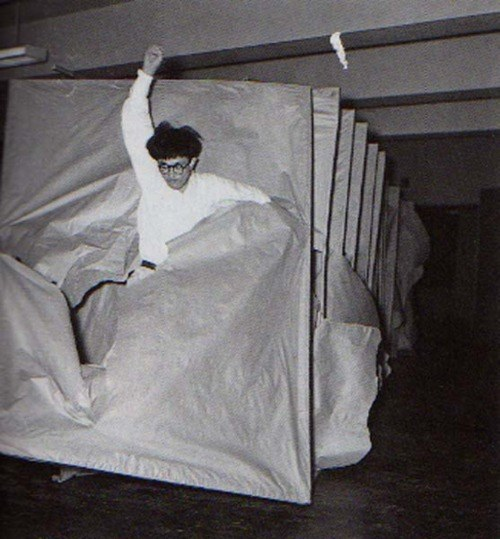

Requirements
Asian Modernities/
World Modernity

Grade
Attendance and Participation
25%
Blog/Journal
25%
Project
10 pg paper or 20 items annotated bibliography 25%
Presentation
25%


A word on the requirements
Is modernity the same thing in different places at different times or one thing at one time? Is modernism a series of similar local reactions to the conditions of modernity or is it the first global culture?
This course provides an unprecedented overview of one of the most pressing set of questions confronting scholars of world cultures, histories, and theories. We are fortunate to have three preeminent young scholars of modern Korean, Chinese, and Japanese literature leading us in sessions on areas of their expertise.
It is expected that seminar participants will take part in the events surrounding the visit of these scholars as well as keep up with the course readings posted on this website.
Course requirements:
Attendance and Participation
25%
Blog/Journal
25%
Seminar participants should keep a blog or journal of your weekly readings. These can be written as polished mini-essays or as simply notes with outlines of arguments and quotations from readings, class discussions, and talks. The idea here is to display that you are keeping up with the course materials and forming your own opinions about them. This is a place to summarize the work of others, raise questions, and outline preliminary ideas of your own. Weekly entries should not exceed 500 words. You may choose a blog venue (host) of your choice, just be sure to email me the link after our first meeting.
Project
25%
Seminar participants may choose between a short (conference length) position paper of no more than 10 pages or creating an annotated bibliography of 20 major scholarly works in their field that relate to the topics discussed.
The position paper should only cite assigned readings and require deep thought, meticulous organization of ideas, and clean prose, but no research.
The bibliography should be thought of as a preliminary personalization of related material in your field. This should be an effort that may support your upcoming examinations, your dissertation, or for use in your teaching.
Presentation
25%
On the final day of class participants will present to other seminar participants your project. Those who chose the paper option with deliver their papers as in a conference. Those who worked on bibliographies will present on the process of discovery from early searches through golden finds.
